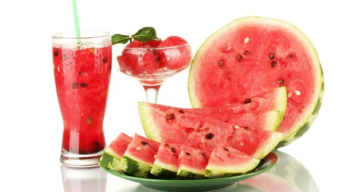

Besinler
Besinlerin Gerekliliği
Otomobilimizle bir yerden başka bir yere gidebilmek için deposuna yakıt koymamız, tekerleklerine hava basmamız, motoruna yağ ilave etmemiz, soğutma sistemine su eklememiz gerekir. Bunlardan biri veya bir kaçı eksikse otomobil çalışmaz. Otomobilin bizi yolda bırakmaması için yakıt, hava, yağ ve suyunun bitmemesi gerekir.Canlıların da yaşamlarını devam ettirebilmeleri için beslenmeleri şarttır. Canlılar, besinlerle birlikte vücutları için gerekli olan yapıcı, onarıcı, düzenleyici ve enerji verici maddeleri alırlar. Canlıların hayati faaliyetlerini devam ettirebilmeleri için tüm besin çeşitlerine ihtiyaçları vardır.
Büyüme çağında olan çocukların vücutlarının gelişip boylarının uzaması için, insanların saç ve tırnaklarının uzaması için, kırılan kemiklerimizin iyileşmesi için yapıcı ve onarıcı özellik taşıyan besinleri tüketmemiz gerekir.
Gün boyunca enerji harcarız. Gün boyu hareket eder; koşar, atlar zıplarız. Bunlar için enerjiye ihtiyaç duyarız. Bu enerjiyi de besinlerden elde ederiz.
Zaman zaman hasta olup yataklara düşeriz. Vücudumuzun hızla iyileşmesi için çeşitli besinler tüketmemiz gerekir. Dengeli beslenen insanlar kolay hastalanmazlar. Hastalansalar bile kolayca iyileşirler.
Ayrıca vücudumuzun düzenli bir şekilde çalışabilmesi için düzenleyici besinler de tüketmeliyiz. Beslenmezsek yaşayamayız. Görüldüğü gibi dengeli beslenme ile sağlık arasında önemli bir ilişki vardır. Tüm canlıların hayatî fonksiyonlarını yerine getirebilmesi için dengeli beslenmesi gerekir.
Besin İçerikleri Ve Görevleri
Gün boyunca tükettiğimiz besinlerin bazılarını bitkilerden, bazılarını hayvanlardan elde ederiz. Bitkilerden elde ettiğimiz besinlere bitkisel besinler, hayvanlardan elde ettiğimiz besinlere ise hayvansal besinler adı verilir.Besinlerin içinde vücudumuz için gerekli olan maddeler vardır. Bu maddelere besin içerikleri denir. Besin içeriklerinin vücudumuzda belirli görevleri vardır. Karbonhidratlar, yağlar, proteinler, vitaminler, mineraller ve su olmak üzere altı çeşit besin içeriği vardır.
Besin Grupları
| Enerji Verici Besinler | Yapıcı-Onarıcı Besinler | Düzenleyici Besinler |
|---|---|---|
| Karbonhidratlar | Proteinler | Vitaminler |
| Yağlar | Mineraller | |
| Su |
Karbonhidrat ve yağlar enerji verici, proteinler yapıcı ve onarıcı, vitaminler, mineraller ve su da düzenleyici besin grubunda yer alır.
Besinlerde birden fazla içerik bulunabilir. Besin, içinde fazla olan içerik ile isimlendirilir. Örneğin ette protein dışında yağ, vitamin gibi diğer besin içerikleri de bulunur. Ancak protein miktarı diğer içeriklere göre daha fazla olduğundan “Et protein içerir.” denir.
Karbonhidrat
 Karbonhidratlar Bakımından Zengin Besinler
Karbonhidratlar Bakımından Zengin Besinler
Karbonhidratların Görevleri
Günlük yaşamımızda koşarız, zıplarız, hoplarız, yürürüz, otururuz, kalkarız… Tüm bunları yapmak için enerjiye ihtiyaç duyarız. Enerji denince akla gelen ilk besin grubu karbonhidratlardır. Karbonhidratlar, vücudumuzun ihtiyacı olan enerjiyi sağlar. Ayrıca beynimizin kullandığı tek enerji kaynağıdır.Karbonhidratlar Bakımından Zengin Besinler
Makarna, ekmek, pirinç, bulgur gibi tahıl ürünleri ile patates, kuru yemiş, pekmez, reçel ve balda bol miktarda karbonhidrat bulunur.Yağlar
Yağlar Bakımından Zengin BesinlerYağların Görevleri
Enerji veren bir başka besin içeriği de yağlardır. Yağlar, karbonhidratlardan daha fazla enerji veren besin içerikleridir.İhtiyaç duyulan enerjinin karbonhidratlardan karşılanamadığı durumlarda yağlar kullanılır. Uzun süre aç kaldığımızda karbonhidratlardaki enerji yetersiz kalır. Bu durumda enerji ihtiyacımızı yağlardan sağlarız. Yağlar deri altına depo edilerek vücudu darbeleri karşı korumakla da görevlidir. Ayrıca yağların, canlıları soğuktan koruma özelliği vardır. Ancak vücuda fazla alındıklarında ise depo edilerek kilo almamıza neden olurlar.
Yağlar Bakımından Zengin Besinler
Tereyağı, kuyruk yağı gibi hayvansal besinler ile ayçiçeği, fındık, ceviz, kabak çekirdeği, zeytin, mısır, susam, soya, kanola gibi bitkisel besinlerde bol miktarda yağ bulunurlar.Proteinler
Protein Bakımından Zengin BesinlerProteinlerin Görevleri
Vücudumuzda yapıcı ve onarıcı görev yapan besinler, proteinlerdir. Proteinler büyümeyi, gelişmeyi ve yıpranan dokuların onarımını sağlar. Ayrıca vücudumuzun mikroplara karşı dirençli olmasında, zekâ ve kas gelişiminde, saç ve tırnakların uzamasında proteinler görevlidir.Proteinler Bakımından Zengin Besinler
Et, yumurta, balık, süt ve süt ürünleri gibi hayvansal besinlerde; nohut, mercimek, fasulye gibi bitkisel besinlerde bol miktarda bulunurlar.Vitaminler
Vitaminler Bakımından Zengin BesinlerVitaminlerin Görevleri
Vitaminler, vücudumuzda düzenleyici olarak görev yapar. Organlarımızın düzenli çalışmasını sağlar. Vitaminler vücudumuzun direncini artırarak bizi hastalıklara karşı korur.Vitaminler Bakımından Zengin Besinler
Sebze ve meyvelerde bol miktarda vitamin bulunur.Mineraller
Mineraller Bakımından Zengin BesinlerMinerallerin Görevleri
Düzenleyici besin içeriklerinden biri de minerallerdir. Kemiklerimizin, dişlerimizin, kaslarımızın ve organlarımızın düzenli çalışması için minerallere ihtiyacımız vardır.Mineraller Bakımından Zengin Besinler
Demir, kalsiyum, çinko, potasyum gibi minerallerin her biri tüm besinlerde bulunur. Su, maden suyu ve balık mineral bakımından zengindir.Su
Su vücudumuzda düzenleyici olarak görev yapar. Vücut sıcaklığının korunması, atık maddelerin vücuttan uzaklaştırılması su sayesinde gerçekleşen olaylardandır.
Su ve Mineraller Bütün Besinlerde Bulunur
Vücudumuzun her gün suya ihtiyacı vardır. Su ihtiyacımızı yiyecek ve içeceklerden karşılarız. Tüm yiyeceklerin içinde su bulunur. Karpuz yediğimizde tabakta su biriktiğini görürüz. Susuz gibi görünen havucu katı meyve sıkacağı ile sıktığımızda su elde ederiz. Hatta nohut, kuru fasulye vb. kuru gıdalar bile içlerinde su barındırır. Su ve Mineraller Bütün Besinlerde Bulunur. Mineraller de su gibi bütün besinlerde bulunur. Kayaçlardaki tuzlar; yağmur, rüzgâr, sıcaklık farkı vb. çevresel faktörlerin etkisiyle ufalanarak toprağa karışır. Topraktaki bu mineraller bitkilere geçer. Bitkilerle beslenen hayvanlar da bu mineralleri vücutlarına almış olurlar.
Sağlıklı Yaşam
Sağlıklı bir yaşam için tükettiğimiz besinlerin taze ve doğal olması gerekir.Satın aldığımız ürünlerin taze olmasına dikkat etmeliyiz. Pazarda satılan ürünlerin üzerinde son kullanma tarihi bulunmaz. Onun için satın aldığımız ürünlerin taze olmasına dikkat etmeliyiz. Taze besinler, vitamin ve mineral bakımından zengindir. Tazeliğini kaybetmiş, uzun süre dışarıda beklemiş, çürümeye başlamış ve bozulmuş besinleri tüketmek sağlığımıza zarar verir. Bu durum zehirlenmelere neden olabilir.
Doğal Besinler
Seçtiğimiz besinlerin doğal olmasına dikkat etmeliyiz. Uzun süre saklanması gereken besinlerin içerisine bazı katkı maddeleri konmaktadır. Uzun süreli saklama ve güvenli taşıma amacıyla kullanılan katkı maddelerinin yararlı olanları olduğu gibi zararlı olanları da vardır. Katkı maddelerinden bazıları besinlerin tatlarında değişikliğe neden olmaktadır.Seçtiğimiz besinlerin doğal olmasına, içerisinde katkı maddesi bulunmamasına veya çok az katkı maddesi bulunmasına dikkat etmeliyiz. Katkı maddeleri genel olarak sağlığa olumsuz etki yapar.
Dondurulmuş Besinler
Bazı besinler, uzun süre saklanması için dondurulur. Bezelye ve pizza gibi besinler dondurulmuş olarak da satılan besinlerdendir. Donu çözünmüş veya paketi yırtık olan dondurulmuş besinleri almamalıyız. Dondurulmuş besinlerin donu çözündükten sonra bu besinleri kısa sürede tüketmeliyiz.
Bazı besinler bozulmadan uzun süre saklamak için paketlenir. Paketlenerek satılan besinlere süt, meyve suyu, ayran, peynir, yoğurt örnek olarak verilebilir. Bu besinleri alırken paketlerinin yırtık olmamasına dikkat etmeliyiz. Ayrıca paketlenmiş bir besini alırken son kullanma tarihine bakmalıyız. Son kullanma tarihi besinlerin bozulmadan tüketilebileceği en son tarihtir.
Türk Standartları Enstitüsü Damgası
Satın aldığımız ürünlerin son kullanma tarihine ve TSE damgası dikkat etmeliyiz. Paketlenmiş besinleri alırken dikkat etmemiz gereken bir başka konu da paketlerin üzerinde TSE damgasının olup olmadığıdır. Bu damga, paketlenen besinin kalite standartlarına uygun olarak üretilip paketlendiğini gösterir.Temiz Besinler
Besinlerin temiz olarak tüketilmesi de önemlidir. Sebze ve meyveleri iyice yıkadıktan sonra tüketmeliyiz. Yıkamamızı gerektiren en önemli sebeplerden biri, zirai ilaç kalıntılarının meyve ve sebzeler üzerinden arındırılmasıdır. Yıkamadan tükettiğimiz besinlerin sağlığımızı bozabileceğini unutmamalıyız.Besinleri Satın Alırken Nelere Dikkat Etmeliyiz?
- Aldığımız ürünün üzerinde TSE damgası olmalıdır.
- Besinlerin ambalajı hasar görmemiş olmalıdır.
- Üretim ve son kullanma tarihi olmalıdır.
- Gıda Tarım Hayvancılık Bakanlığı tarafından verilen onay numarası olmalıdır.
- Mevsimine uygun sebze ve meyveler tercih edilmelidir. Kuru baklagiller satın alınırken küflü olmamasına özen gösterilmelidir. Çatlak yumurtalar satın alınmamalıdır.
- Dondurulmuş besinler alışverişin sonunda satın alınmalıdır. Bu tür besinler en kısa zamanda dondurucuya yerleştirilmelidir
- Satın alınan gıdalar temizlenmeden tüketilmemelidir.
Bu ünitemizde Besinler,Besin İçerikleri Ve Görevleri,Sağlıklı Yaşam konusunu detaylı bir şekilde öğrendik artık 3.Üniteye geçebiliriz.